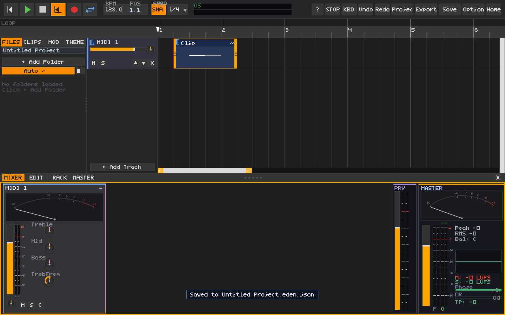
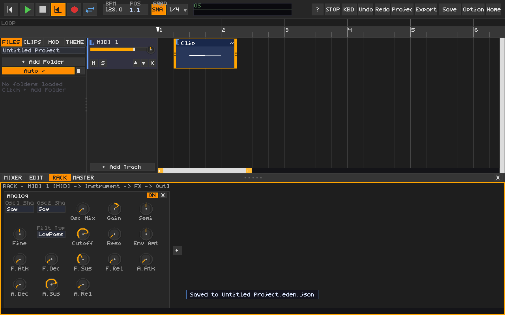

Design proposal — not an implemented UIEden: clear timing, compact mixing, focused devices
Keep musical time, source time and screen scale independent. This illustration models constant tempo; the engine must also integrate a complete tempo map.
Tempo changes time; zoom changes pixels
MIDI • 4 beats
Native audio • 2 seconds
Warped audio • 4 beats
The MIDI and warped clip stay four beats long. Native audio stays two seconds long, so its beat span changes. Moving the zoom slider changes only their screen widths. UI scale is a separate display magnification; it changes none of these timing values.
Selected-track device view
One consistent device shell, compact headers, semantic control groups and optional expanded detail. CStrip2 moves here from the mixer, preserving its existing final effect position and sound.
Oscillator Filter Envelope Modulation
→→EQ Compression Output
Expand only when editing. Keep default mixer strips focused on levels and routing.
Compact mixer
Level, pan, meter and mute/solo remain visible. Detailed EQ and compressor curves belong to the selected device editor. Master diagnostics expand on demand.
Current screenshots for comparison
These are actual captures of the original UI; the schematic above describes a future direction.
Original full mixer

Original instrument rack

Read the technical review for defects, ownership changes, acceptance checks and migration steps.